The food at Foodies is
a culinary journey to the roots of South India's culture and tradition.We believe every meal should make a
person feel warm, cared for, and loved.
At Foodies, we deliver this with delicacies made with hand-picked ingredients cooked to perfection, and
served with love! With every meal, we serve happy memories and love stories.
After finishing a work
meeting, we decided to head out for lunch. FOODIES hotel was recommended and so we decided to try it out.
The first impression was a good one. It’s a Chettinad restaurent and must compliment them for the wonderful,
well thought out design that did justice to the place.
Attention to details such as brass taps, black and white flooring, colonial furniture, old photos and even
the vintage switches. I wish they has used vintage fans. This could have greatly added to the authentic
ambience.
Here are a few photos of the restaurent.
Chettinad cuisine is the cuisine of a community called the Nattukotai Chettiars, or Nagarathars, from
the Chettinad region in Sivaganga district of Tamil Nadu state in India.Chettinad cuisine is perhaps the
most renowned fare in the Tamil Nadu repertoire.It uses a variety of spices and the dishes are made with
fresh ground masalas. Chettiars also use a variety of sun-dried meats and salted vegetables, reflecting the
dry environment of the region. Most of the dishes are eaten with rice and rice based accompaniments such as
dosas, appams, idiyappams, adais and idlis. The Chettiars, through their mercantile contacts with Burma,
learnt to prepare a type of rice pudding made with sticky red rice.
The chefs of manapatti village near
Singampunari are experts in cooking Chettinad cuisine. They always used to cook in bulk orders for marriage
functions, political functions, etc.though manapatti cooking is portrayed as madurai cuisine because it is
located near to madurai district, it comes under chettinad cuisine only and it also comes under the
chettinad region of sivagangai district. The entire village people is famous in the art of cooking.
A non-vegetarian dish sample tray in Chettinad Hotel Chettinad cuisine offers a variety of vegetarian
and non-vegetarian dishes. Some of the popular vegetarian dishes include idiyappam, paniyaram, vellai
paniyaram, karuppatti paniyaram, paal paniyaram, kuzhi paniyaram, kozhukatta, masala paniyaram, aadikoozh,
kandharappam, seeyam, masala seeyam, kavuni arisi, maavurundai, and athirasam. In Chettinad food, major
spices used include anasipoo (star aniseed), kalpasi (a lichen), puli (tamarind), milagai (chillies), sombu
(fennel seed), pattai (cinnamon), lavangam (cloves), punnai ilai (bay leaf), karu milagu (peppercorn),
jeeragam (cumin seeds), and venthayam (fenugreek).
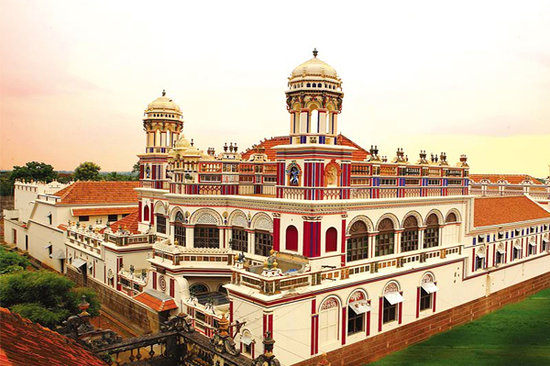
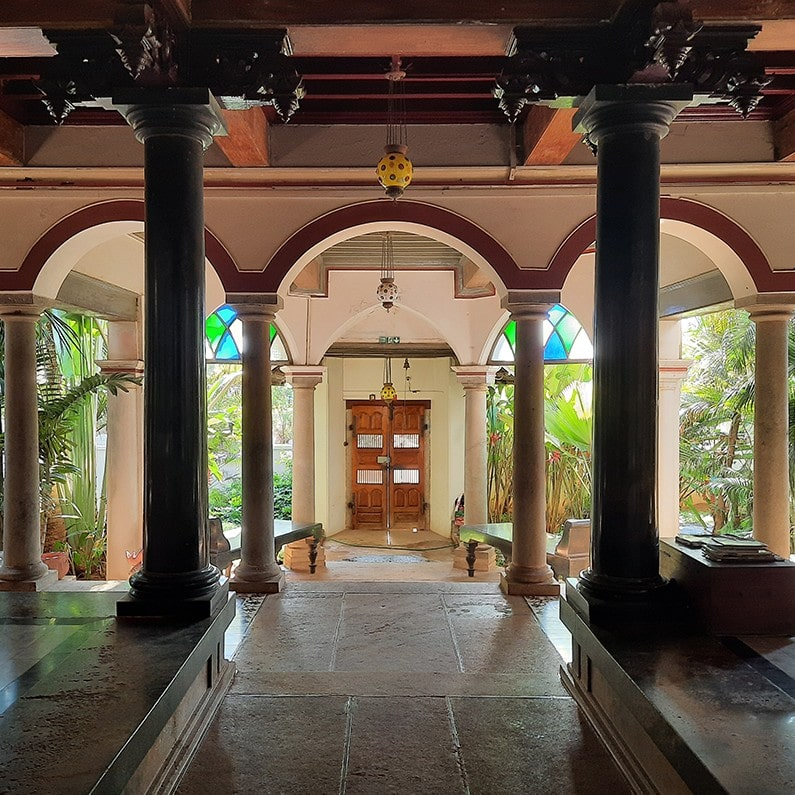
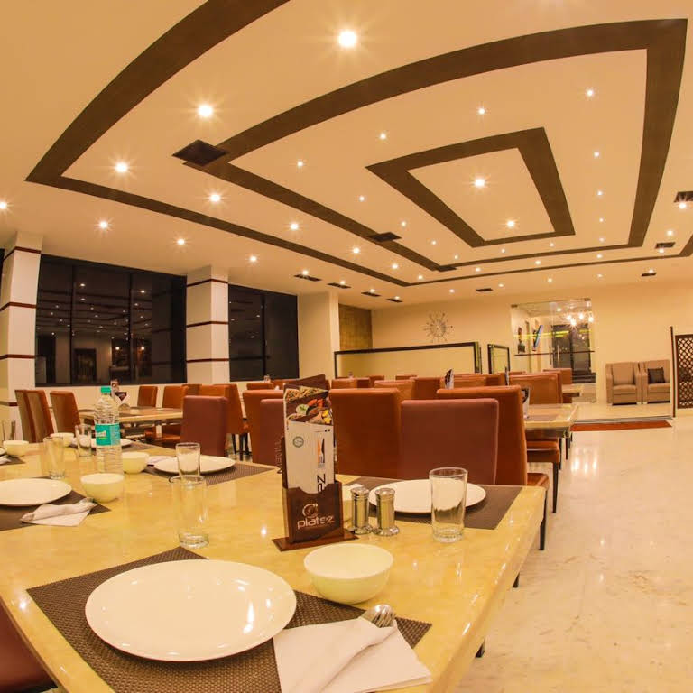
 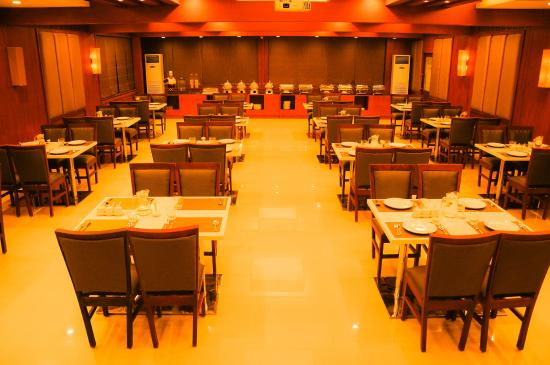
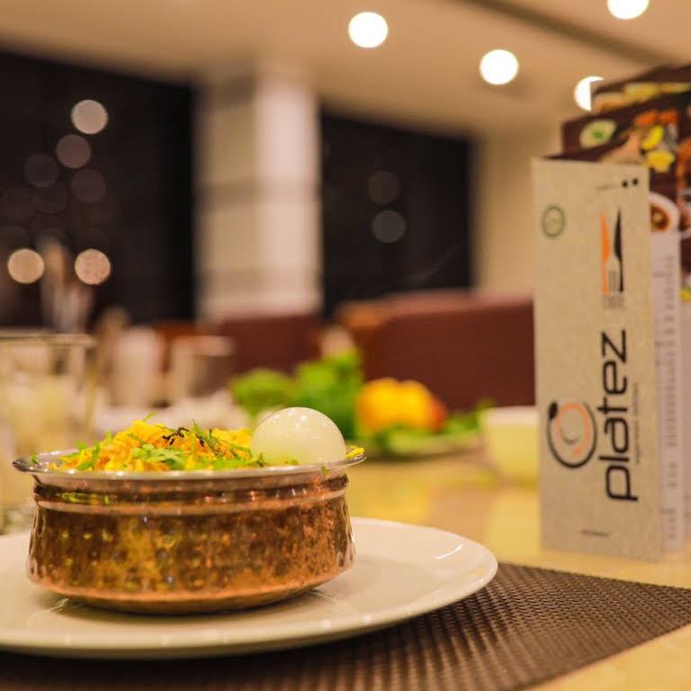
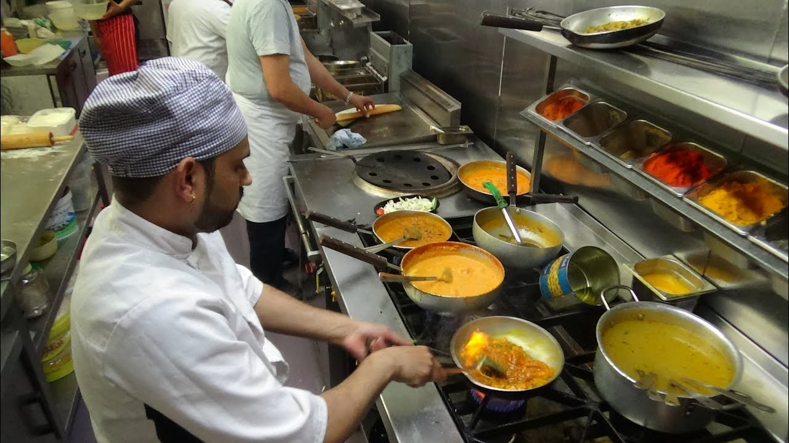
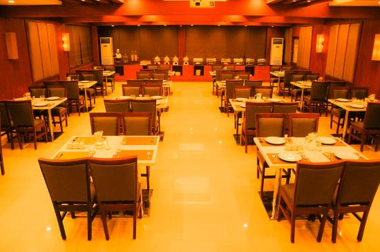
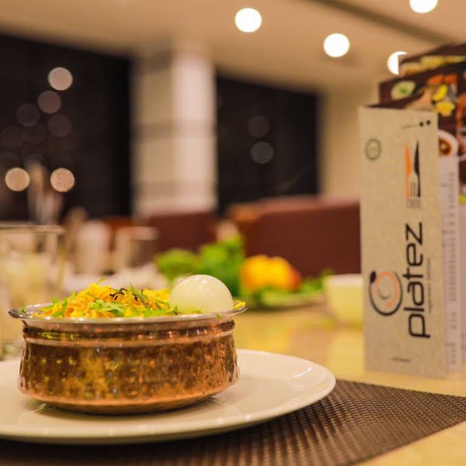
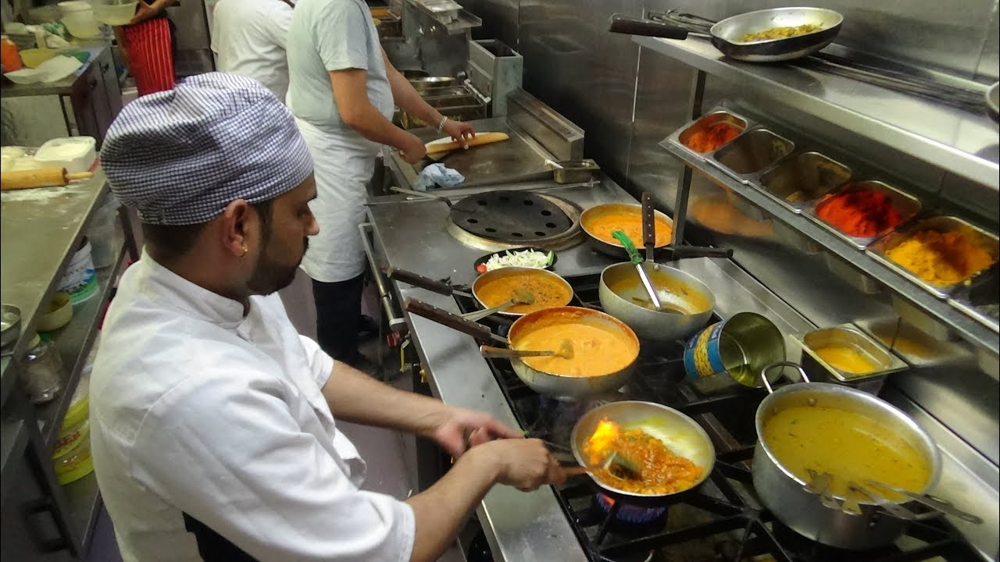
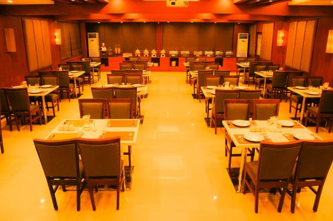
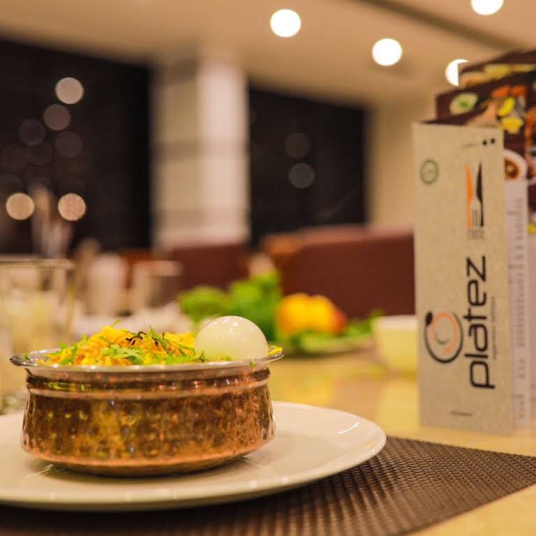
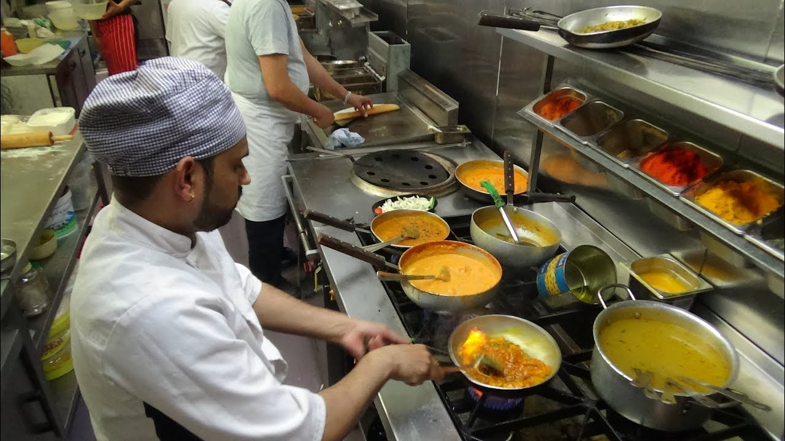